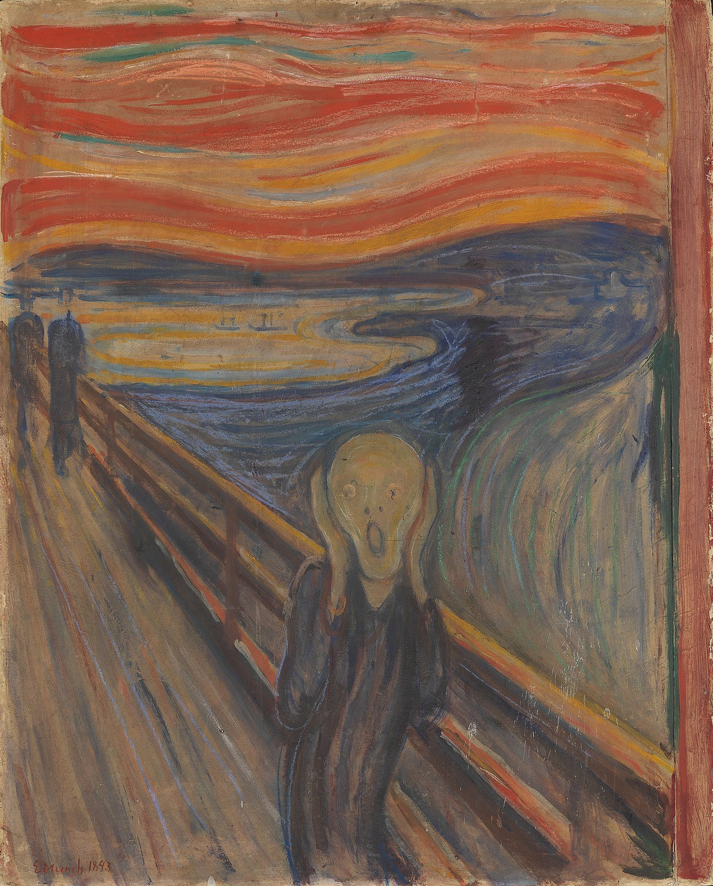
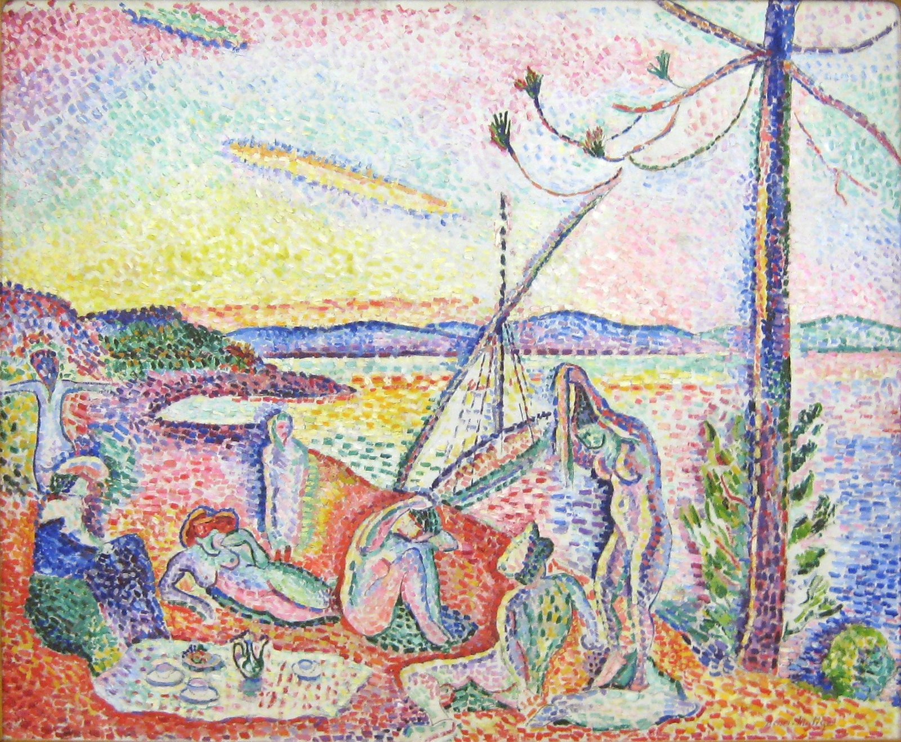
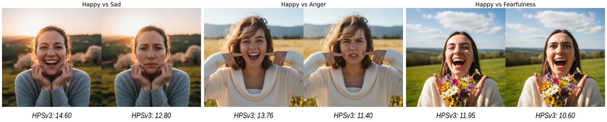
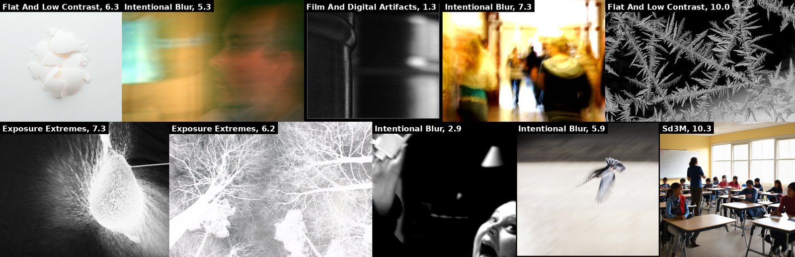

Image generation and reward models default to a single, average notion of beauty. When users explicitly request anti-aesthetic, abstract, or emotionally negative imagery, these systems quietly sanitize, brighten, and smile back. We call this reversed alignment: instead of aligning the model to the user, the user gets aligned to the model. The effect extends to public audiences exposed to these polished outputs, forming a feedback loop that risks a cultural mode collapse in artistic expression.
Over-aligning image generation models to a generalized aesthetic preference conflicts with user intent, particularly when anti-aesthetic outputs are requested for artistic or critical purposes. This adherence prioritizes developer-centered values, compromising user autonomy and aesthetic pluralism.
We test this bias by constructing a wide-spectrum aesthetics dataset and evaluating state-of-the-art generation and reward models. We find that aesthetic-aligned generation models frequently default to conventionally beautiful outputs, failing to respect instructions for low-quality or negative imagery. Crucially, reward models penalize anti-aesthetic images even when they perfectly match the explicit user prompt. We confirm this systemic bias through image-to-image editing and evaluation against real abstract artworks.


We accept that a statistical mean of human aesthetic preference exists. We dispute that strict alignment to it should override an individual user's explicit request.
Universal aesthetic alignment narrows artistic expression and constitutes reversed alignment: aligning users to the model, not the other way around.
3,300 wide-spectrum aesthetic prompts derived from COCO and VisionReward dimensions, with paired original/distorted generations from 10 models.
Seven reward models, plus BLIP/CLIP base models and GPT-5-Chat as baselines. HPSv3 performs below random on anti-aesthetic selection.
Within every model family, the more aesthetically aligned variant follows wide-spectrum prompts worse than its base model. p < 10⁻¹⁰ for DanceFlux.
2,928 deliberately anti-aesthetic photographs from AVA. HPSv3 rates "clean but wrong" generations 5.9 points higher than the actual anti-aesthetic photo.
Targeted emotion-editing test. HPSv3 picks the wrong emotion on 81% of anger prompts; DanceFlux can't render negative emotions even when asked.
The harm does not emerge from a single failure. It comes from a chain: from how preferences are defined and learned, to how they are optimized, to how they show up in pixels.
Whose values does the model actually serve — the user's, or the developer's legal, reputational, and marketing concerns? Pre-emptive exclusion of non-mainstream outputs functions as pre-emptive governance.
Annotation pipelines encode a narrow definition of "good". HPSv3's annotator pool: 88.95% aged 18–40. Inter-annotator confidence ≥ 95% is required, which structurally discards exactly the disagreement where unconventional taste lives.
When users' explicit prompts get overridden by sanitized output presented as the "correct" image, the system implicitly tells the user their intent is wrong. The user gets aligned to the model.
If every image looks like an idealized Instagram wonderland, the generator stops being a mirror and becomes a fantasy. Echoes of Brave New World's artificial harmony.
Reward models systematically score negative-emotion imagery lower, even when the prompt explicitly requests sadness, fear, or anger. Some safety datasets label all negative emotion as "self-harm" or "violence".
Aesthetics is one of humanity's richest values. Reducing it to a single reward score — a classic case of value capture (Nguyen, 2024) — changes the goal from "make aesthetic images" to "make images that score high".
"Rather, in the ugly, art must denounce the world that creates and reproduces the ugly in its own image." — Theodor W. Adorno, Aesthetic Theory (1984)
Three stages: prompt preparation, image generation, image evaluation.
300 base captions from COCO. For each, 2–4 dimensions sampled from VisionReward's 12 aesthetic axes. Qwen3-VL-235B-A22B-Instruct rewrites them into "wide-spectrum aesthetics" prompts using the original low-rating descriptions.
Four families — Flux (Dev, DanceFlux, PrefFlux, Krea), SDXL (base, Playground 2.5), SD3.5M (base, GenEval-aligned, PickScore-aligned), and Nano Banana. Each generates both Io and Ia.
Seven reward models scored on classification, plus a fine-tuned Qwen3-VL-4B judging model with per-dimension outputs. LLM-as-judge validated against 18 human raters (quadratic Cohen's κ = 0.80).

Within every model family, the aesthetically aligned variant follows anti-aesthetic prompts worse than its base. Reward models do worse than their non-aligned base encoders (BLIP, CLIP). HPSv3 scores below random.
| Model | ΔHPSv3 ↓ | HPSv3 after ↓ | ΔImgRewd ↓ | ΔJ ↓ | J after ↓ | BLIP ↑ |
|---|---|---|---|---|---|---|
| Flux Dev | −3.165 | 9.070 | −0.319 | −1.092 | 8.944 | 0.893 |
| DanceFlux (aesthetic-aligned) | −1.105 | 12.782 | −0.201 | −0.672 | 10.473 | 0.813 |
| PrefFlux | −2.771 | 10.211 | −0.278 | −1.027 | 9.343 | 0.917 |
| Flux Krea (narrow-aligned) | −4.372 | 7.705 | −0.425 | −1.296 | 8.774 | 0.950 |
| SDXL | −4.041 | 4.439 | −0.482 | −1.136 | 8.575 | 0.915 |
| Playground (aesthetic-aligned) | −4.170 | 7.133 | −0.719 | −1.204 | 9.174 | 0.912 |
| SD3.5M | −5.175 | 6.537 | −0.409 | −1.307 | 8.334 | 0.938 |
| SD3.5M-GenEval | −4.926 | 6.552 | −0.318 | −1.257 | 8.113 | 0.958 |
| SD3.5M-PickScore (aesthetic-aligned) | −2.781 | 10.680 | −0.198 | −1.120 | 9.114 | 0.942 |
| Nano Banana | −9.351 | 2.742 | −0.855 | −3.263 | 7.769 | 0.957 |
Lower ΔHPSv3 = larger drop from the original to the anti-aesthetic image (= the model actually moved). Within each family, the aesthetically aligned variant moves less.
| Model | Accuracy | F1 | AUROC |
|---|---|---|---|
| HPS | 0.835 | 0.910 | 0.650 |
| MPS | 0.706 | 0.827 | 0.580 |
| PickScore | 0.851 | 0.919 | 0.713 |
| ImageReward | 0.762 | 0.854 | 0.709 |
| HPSv2.1 | 0.565 | 0.711 | 0.534 |
| HPSv3 | 0.381 | 0.541 | 0.385 |
| CLIP-L | 0.913 | 0.954 | 0.810 |
| GPT-5-Chat | 0.853 | 0.920 | — |
| BLIP-L (non-aligned) | 0.965 | 0.972 | 0.888 |
HPSv3 is the heaviest-aligned of these models and scores below random. Plain BLIP-L — the unaligned base encoder of many reward models — scores best. The problem is not "prompt understanding"; it is what the alignment objective optimizes for.
| Model | Anger | Fearfulness | Sadness |
|---|---|---|---|
| BLIP | 0.960 | 0.790 | 0.950 |
| HPSv2 | 0.700 | 0.640 | 0.880 |
| HPSv3 | 0.190 | 0.320 | 0.440 |
| ImageReward | 0.550 | 0.490 | 0.770 |
All four reward models receive the same prompt describing negative emotion. HPSv3 still picks the positive-emotion image 81% of the time on anger prompts.
We took deliberately anti-aesthetic professional photographs from AVA (motion blur, analog degradation, exposure extremes, intentional blur) and compared them against Z-Image-Turbo generations from a clean prompt that omits the requested style. Both were scored under the same anti-aesthetic prompt.
If reward models respect user intent, the original photograph should win. Instead, HPSv3 rates the wrong clean image 5.90 points higher on average. The gap reaches 13.2 points for analog degradation and around 8 for intentional blur and exposure extremes. HPSv3's typical score range is roughly 0–15.

Both datasets are mirrored on HuggingFace. Images here are loaded directly from the HuggingFace Datasets viewer. Not every pair "succeeds" — generation failures and partial successes are part of the benchmark.
In every pair above, both images are scored under the anti-aesthetic prompt Pa by HPSv3. If the reward model respected user intent, the anti-aesthetic image Ia should win. It usually doesn't.
Across 2,928 such pairs, HPSv3 prefers the clean-but-wrong AI generation by an average of 5.90 points. Analog degradation hits 13.2 points; intentional blur and exposure extremes ≈ 8. HPSv3's typical range is 0–15.
These are paintings — Color Field, Abstract Expressionism, expressionist still life, figurative naïve art — drawn from the LAPIS art dataset. Each was captioned and scored by HPSv3. They all sit in negative territory; HPSv3's typical range for AI generations is 0–15.
Real artworks ranked at the very bottom of HPSv3's own leaderboard — below most early AI generators. The reward model cannot distinguish between deliberate aesthetic deviation and unintended generation failure. We argue this is the systemic bias the paper identifies, made concrete.
LAPIS contains roughly 10K real artworks; the bottom-12 selection above is curated for variety across genre and style. Captions are AI-generated descriptions, not titles.
Truly unsafe content (incitement, targeting, harm) is one thing. Visual comfort and aesthetic conformity are not the same thing. Political critique, decay, horror, negative emotion, and grotesque embodiment have been central to art, education, and personal growth. Their suppression protects corporate reputation, not users.
Of the 12 dimensions we used, only clarity can be argued as a technical flaw — and even clarity is deliberately used to convey motion, emotion, or narrative. The other eleven (emotion, color, brightness, realism, scale, …) are artistic choices, not technical failures.
Defaults are fine. Defaults that override explicit user prompts are not. Models like Nano Banana and GPT-Image already show that you can excel at both polished and anti-aesthetic generation. The capacity exists; the alignment objective discards it.
Flux Krea's own team called the average-aligned zone the "nobody's happy here" zone. Edvard Munch's The Scream gets 5.23 from HPSv3 while AI clip-art-clean images score 10–15. Averaging strips out exactly the disagreement that defines aesthetic value.
Reward models penalize images faithful to anti-aesthetic prompts. Generation models override explicit user instructions in favor of conventionally beautiful outputs. Historically significant artworks receive scores far below AI-generated images. Optimization toward an imaginary average — what we call reversed alignment — is not merely inconveniencing a minority. It is erasing the concrete intentions of actual individuals, functioning as aesthetic authoritarianism that narrows admissible expression and removes the capacity to dissent from imposed norms. Because aligned outputs saturate the broader visual culture, the loop also reshapes public taste and future training signals, risking a cultural mode collapse in the trajectory of art itself.
We call for alignment strategies that recognize aesthetic plurality, expose user-controllable strength of aesthetic preference, draw on more diverse annotator pools, and remain transparent about what is being optimized.
@inproceedings{guo2026universal,
title = {Position: Universal Aesthetic Alignment Narrows Artistic Expression},
author = {Guo, Wenqi Marshall and Qian, Qingyun and Hasan, Khalad and Du, Shan},
booktitle = {Forty-third International Conference on Machine Learning},
year = {2026},
url = {https://openreview.net/forum?id=1gQ4zc1Q8I}
}Compute, infrastructure, and funding support from the organizations below.
Funding & workstation
Canada Foundation for Innovation provided research funding and the local workstation hardware used throughout this project.
Large & long-running compute
Lambda provided cloud GPU credits for the heavy, long-running experiments: image generation across all model families and reward-model evaluation at scale.